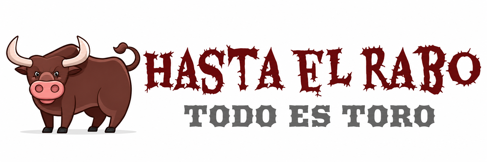

PODCAST TAURINO · DESDE MURCIA PARA EL MUNDO
Hasta el Rabo
Todo es Toro
El mejor Podcast taurino semanal
desde Murcia para el Mundo.
Este es el nuevo programa de radio taurino semanal de actualidad taurina. De la mano del periodista Manolo Guillén, con la colaboración de Cándido Martínez.
Información, opinión, entrevistas y nuestras secciones habituales.
MANOLO GUILLÉN
·
CÁNDIDO MARTÍNEZ
LOS 5 MÁS RECIENTES
Últimos episodios
Mostramos aquí solo los 5 episodios más recientes.
VER TODOS LOS PROGRAMAS →
Cargando los últimos episodios…
ESCUCHA EL PROGRAMA
Elige dónde quieres escucharlo
Encuentra Hasta el Rabo Todo es Toro en tus plataformas habituales.